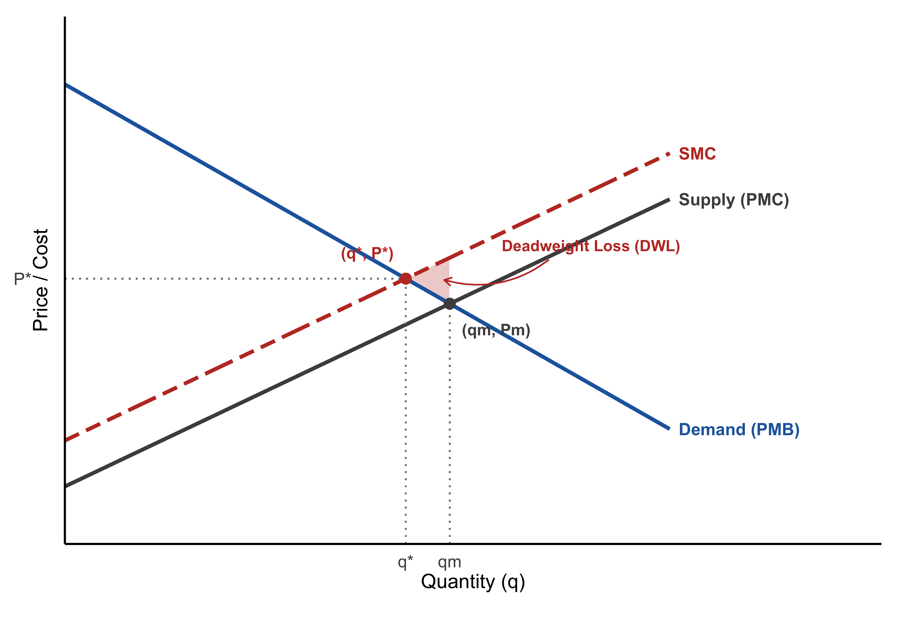
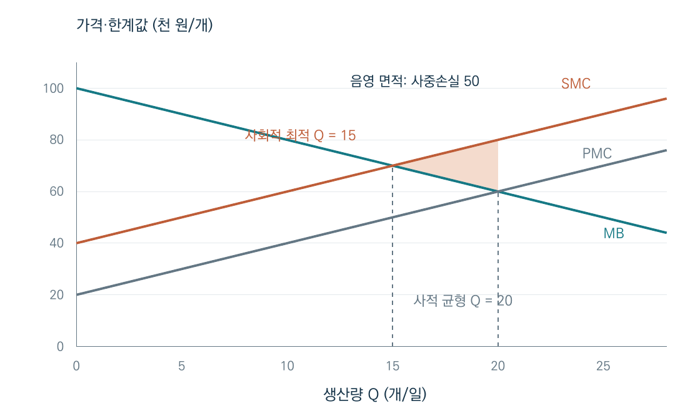
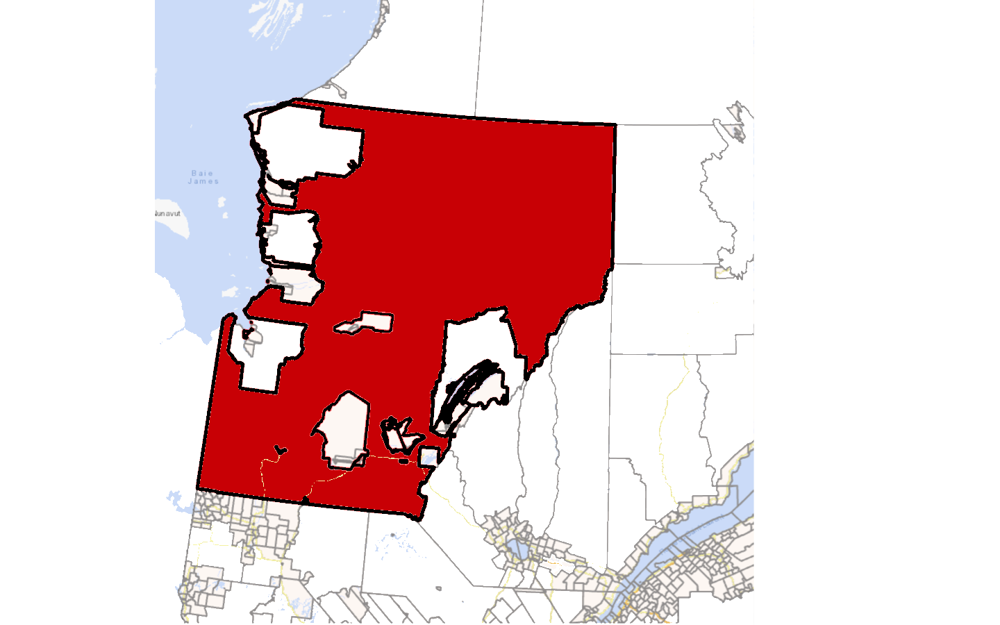
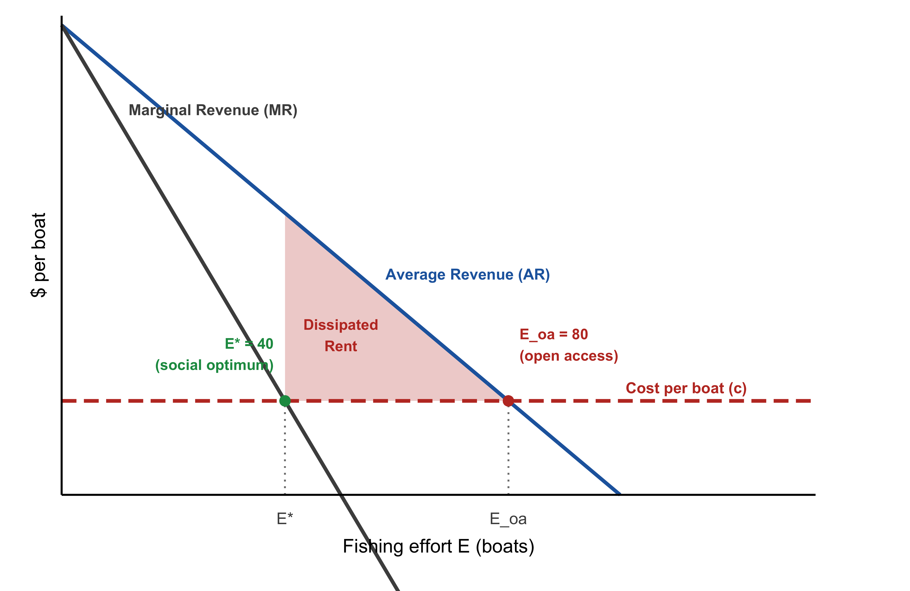
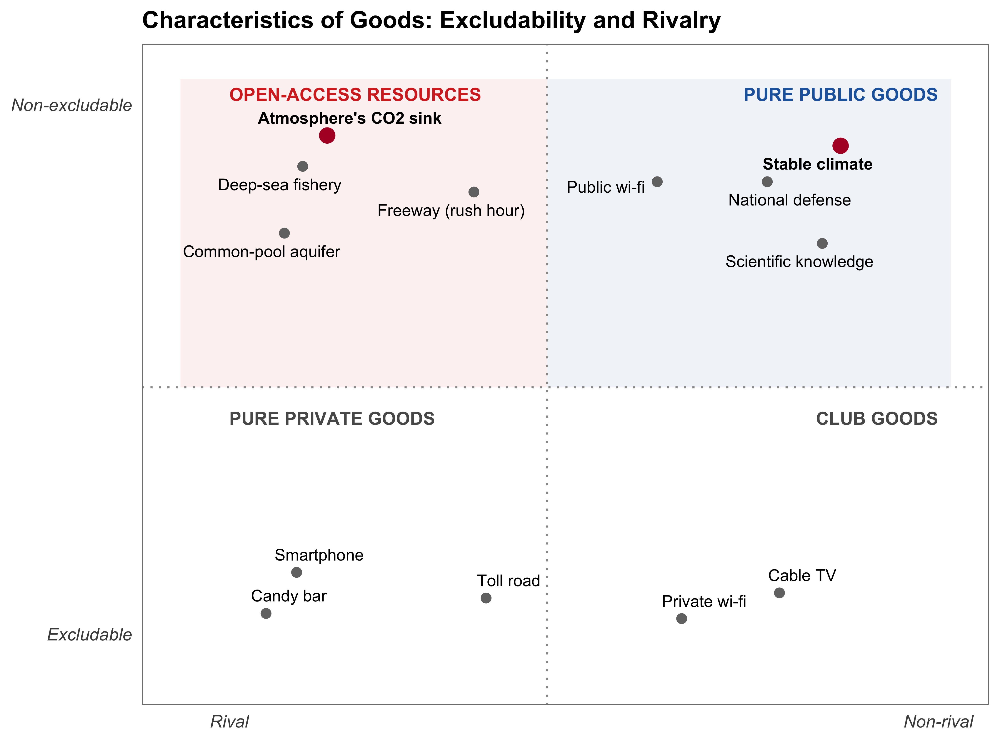
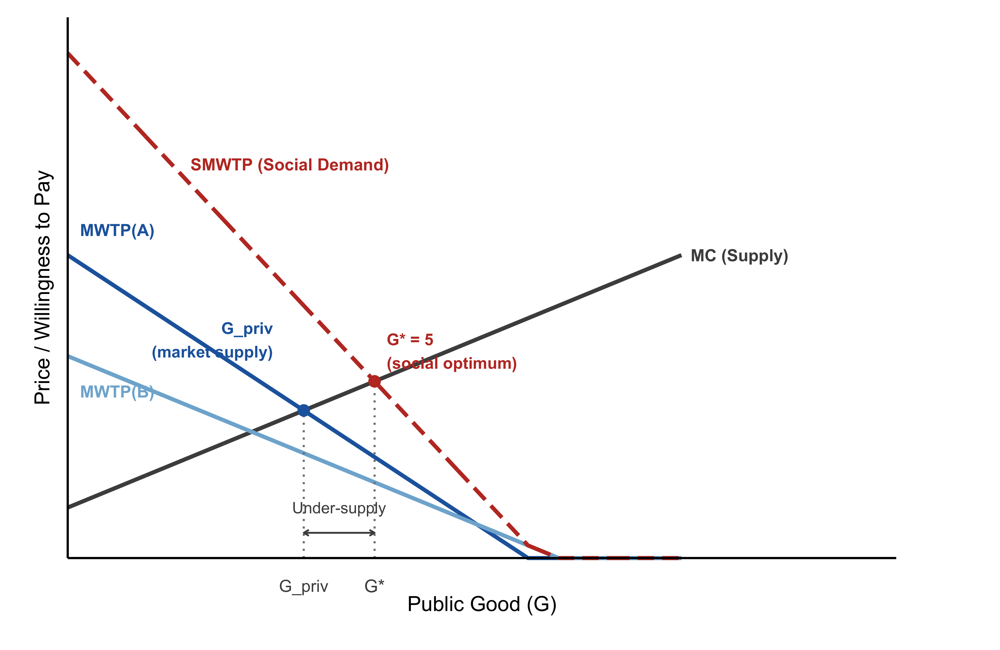
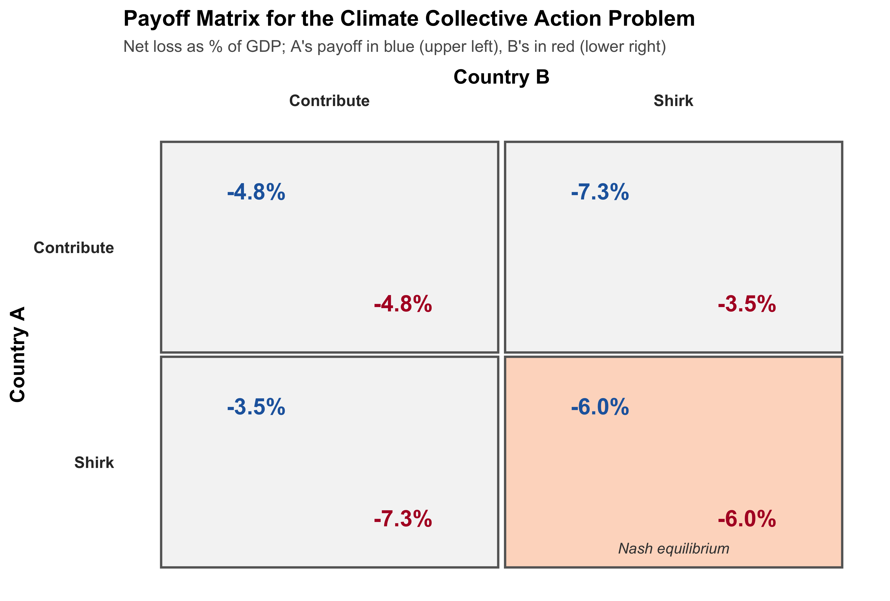

4 시장실패와 기후변화
들어가며: 기록적 엘니뇨와 세계 식량 가격
오늘의 뉴스
2026년 9월 AP통신은 “악화하는 엘니뇨가 아시아를 가뭄으로 위협하고, 세계 식량 가격을 끌어올릴 수 있다”는 기사를 내보냈다. 기사에 실린 사진에는 인도네시아 자카르타의 상수원 저수지 수위가 급감하면서, 저수지가 생길 때 물에 잠겼던 마을의 잔해가 드러난 모습이 담겼다.
엘니뇨(El Niño)란 열대 태평양의 해수면 온도가 평년보다 높아지는 현상으로, 몇 년에 한 번씩 반복되는 자연적 기후 주기(엘니뇨-남방진동, ENSO)의 한 국면이다. 바닷물이 따뜻해지면 대기의 흐름이 바뀌어 전 지구의 강수와 기온 패턴이 흔들린다. 그 영향은 지역마다 다르게 나타나, 동남아시아와 호주에는 가뭄과 폭염이, 남미 일부에는 폭우와 홍수가 찾아온다. 엘니뇨 자체는 자연 현상이지만, 기후변화로 바다가 이미 따뜻해진 상태에서 겹치면 그 강도가 더 커질 수 있다. 실제로 2026년 8월 전 지구 해수온은 역대 최고치를 경신했다.
기사의 내용을 요약하면 다음과 같다.
- 역대급 강도: 미국 해양대기청(NOAA)은 이번 엘니뇨가 1950년 기록 이래 가장 강력할 확률을 69%로 추정했고, 영국 기상청은 “생애 최강” 수준이라고 평가했다.
- 식량안보 타격: 유엔 세계식량계획(WFP)은 2027년 말까지 최대 4,900만 명이 추가로 심각한 식량 불안정에 빠질 수 있다고 경고했다. 중미와 남부 아프리카가 가장 심하고, 동아프리카와 남·동남아시아도 타격을 받는다.
- 현장: 인구 4,200만 명의 자카르타 광역권 상수원이 말라가고, 메콩강 유역(캄보디아·라오스·태국·베트남)의 어업이 압박을 받는다.
- 경제적 파장: 골드만삭스는 세계 식량 가격이 15% 이상 오를 수 있다고 추정했고, HSBC는 과거 엘니뇨의 경제적 손실이 조 달러 단위에 달했다고 분석했다.
엘니뇨에서 식량위기로: 하나의 인과 사슬
엘니뇨 → 가뭄·고온(강수 감소) → 쌀·팜유 생산 감소 → 세계 식량 가격 상승 → 저소득층의 식량안보 위험. 이 사슬이 왜 전 세계로 퍼지는지는 무역 구조를 보면 알 수 있다. 세계 쌀 수출 1-3위국인 인도, 베트남, 태국이 모두 엘니뇨의 직격탄을 받을 가능성이 큰 나라들이다. 또 인도네시아와 말레이시아는 세계 팜유 공급의 약 85%를 차지하는데, 비가 부족해 비료를 주지 못하면 생산이 줄어든다. 한 지역의 기상 이변이 시장을 통해 지구 반대편 가계의 식탁 물가와 빈곤선 여부까지 좌우하는 것이다.
이 장의 주제와 연결해 보자. 엘니뇨 자체는 누구의 잘못도 아닌 자연 현상이다. 그러나 그 위험을 키우는 바다의 온난화는 전 세계 수많은 배출자의 선택이 쌓인 결과이며, 그 배출자들은 자카르타 주민이나 메콩강 어민이 입는 피해에 대해 아무런 대가도 치르지 않는다. 이것이 이 장에서 다룰 시장실패의 핵심 구조다.
시장실패 I: 외부효과
외부효과의 정의
어떤 선택이 거래 당사자 바깥의 사람에게 영향을 주고, 그 영향이 선택자의 비용·편익에 충분히 반영되지 않을 때 외부효과가 발생한다.
가격을 통한 영향과 물리적 외부효과도 구분한다. 내가 밀을 더 사서 가격이 오르는 현상은 금전적 외부효과(pecuniary externality)라고 부르지만, 경쟁적이고 완전한 시장의 기준 모형에서는 가격 변화 자체가 교정해야 할 시장실패는 아니다. 반면 오염으로 이웃의 수확량이 줄면 생산 가능성이 직접 바뀐다. 기존 왜곡이나 불완전한 시장이 있는 경우에는 가격을 통한 효과에도 별도의 분석이 필요하다.
피해자에게 일회성 보상금을 주었다고 추가 오염의 유인이 자동으로 바뀌지는 않는다. 배출을 조금 늘릴 때 부담도 늘어나는지 확인해야 한다. 내부화는 단순한 돈의 이전보다 선택의 구조에 관한 개념이다.
외부효과의 예: 지역 오염에서 기후변화까지
고전적인 외부효과 사례를 생각해보자.
철강 공장이 하천으로 오염물질을 방류한다. 하류의 농가는 이 물을 농업용수로 사용하는데, 오염으로 인해 작물 생산량이 감소한다. 농가는 아무런 보상을 받지 못한다.
이 사례에서 철강 공장의 생산 결정에는 자신의 생산 비용만 고려될 뿐, 농가에게 전가되는 피해 비용은 포함되지 않는다. 재산권의 문제다: 하천에 대한 소유권이 불분명하기 때문에, 오염의 비용이 철강 공장에게 귀속되지 않는다.
기후변화는 이 문제의 극단적인 형태다. 석탄화력발전소가 전기를 생산하며 배출하는 \(\text{CO}_2\)를 생각해보자. 발전소는 연료비\(\cdot\)인건비 같은 자신의 발전 비용만 고려해 전력 가격을 매기지만, 그 \(\text{CO}_2\)가 대기에 축적되어 일으키는 기후 피해 - 폭염, 해수면 상승, 태풍 강도 증가 - 는 그 가격 어디에도 반영되지 않는다.
철강 공장-농가 사례와 근본적으로 다른 점이 하나 있다. 하천 오염은 가해자(공장)와 피해자(농가)가 같은 유역, 같은 시대에 존재해 누가 누구에게 얼마나 피해를 끼쳤는지가 비교적 분명하다. 반면 기후변화의 외부효과는 가해자와 피해자가 지구 반대편으로, 심지어 수십\(\sim\)수백 년의 시차를 두고 갈라진다 - 오늘 배출된 \(\text{CO}_2\)는 앞으로 태어날 세대가 겪을 홍수와 폭염의 원인이 될 수 있다. 이처럼 배출자와 피해자를 잇는 인과관계가 지구적\(\cdot\)세대 간으로 확산되어 있다는 점이, 기후변화라는 외부효과를 다른 어떤 환경 문제보다 해결하기 어렵게 만드는 이유다.
사회적 한계비용과 시장 비효율
외부효과가 있을 때 시장균형이 왜 비효율적인지를 이해하려면, 사회적 비용과 사적 비용의 차이를 구분해야 한다.
사회적 한계비용(Social Marginal Cost, SMC)은 생산 한 단위를 늘릴 때 사회 전체가 부담하는 추가 비용이다. 부정적 외부효과가 있을 때:
\[\text{SMC} = \text{PMC} + \text{EMC}\]
여기서 PMC는 사적 한계비용(Private Marginal Cost), EMC는 외부 한계비용(External Marginal Cost) - 즉 외부효과로 인해 제3자가 부담하는 추가 비용이다.
규제가 없는 시장에서 오염을 유발하는 기업은 자신의 PMC만 고려하므로, 사회적으로 바람직한 수준보다 많이 생산한다. 이를 그림으로 나타내면 다음과 같다.
- 시장균형: \(P^m, q^m\) (PMC = PMB에서 결정)
- 사회적 최적: \(P^*, q^*\) (SMC = SMB에서 결정)
- \(q^m > q^*\): 시장은 과잉 생산한다.
과잉 생산된 구간 \((q^*, q^m)\)에서는 SMC > SMB이므로, 각 단위마다 사회적 손실이 발생한다. 이것이 부정적 외부효과가 초래하는 사중손실(Deadweight Loss, DWL)이다.
숫자로 직접 확인해보자. 그림 4.2 에서 사용한 \(\text{PMC} = 1 + 0.5q\), \(\text{PMB} = 8 - 0.6q\), \(\text{EMC} = 0.8\)(일정)이라는 예를 그대로 쓰면, 시장균형은 \(\text{PMC} = \text{PMB}\)에서 \(q^m \approx 6.36\)이고, 사회적 최적은 \(\text{SMC} = \text{PMB}\)에서 \(q^* \approx 5.64\)다. 규제가 없다면 시장은 사회적 최적보다 약 \(0.73\)단위를 과잉생산하며, 이 구간 하나하나에서 SMC가 PMB를 웃돌아 발생하는 손실을 모두 더하면 사중손실은 약 \(0.29\)(가격 \(\times\) 수량 단위)에 이른다. 외부효과가 클수록(EMC가 클수록), 또는 수요·공급이 가격에 민감하게 반응할수록 이 손실은 더 커진다.
생산량을 \(q^m\)에서 \(q^*\)로 줄이면 두 가지 일이 동시에 벌어진다. 생산이 줄어드는 만큼 소비자\(\cdot\)생산자 잉여는 감소하지만, 그보다 더 큰 오염 피해(EMC만큼의 외부비용)가 사라진다. \(q^*\)에 이르기까지는 후자의 이득이 전자의 손실을 웃돌기 때문에 생산량을 줄일수록 사회 전체의 순편익은 계속 늘어나며, 정확히 \(\text{SMC} = \text{PMB}\)가 성립하는 \(q^*\)에서 그 이득이 소진된다. 즉 위에서 구한 사중손실 \(0.29\)는, 시장이 \(q^*\)로 가지 않고 \(q^m\)에 머무름으로써 사회가 놓치고 있는 순이득 그 자체다.
- 부정적 외부효과: 시장은 사회적 최적보다 더 많이 생산한다. (예: 오염 산업)
- 긍정적 외부효과: 시장은 사회적 최적보다 더 적게 생산한다. (예: 신재생에너지 R&D, 예방 접종)
핵심 문제는 외부효과가 가격에 반영되지 않는다는 것이다. 해결책은 외부효과를 가격 신호에 내재화(internalize)하는 것이다 - 이것이 환경 정책의 경제학적 근거다.
다음 그림은 사적 비용과 사회적 비용의 차이를 보여준다.

계산 예제 4.1 | 3장의 시장에 외부비용을 더하기
3장 예제의 \(MB=100-2Q\), \(PMC=20+2Q\)를 다시 쓰자. 생산 한 단위마다 외부 한계피해 20천 원이 발생하고, 이는 수량과 무관하게 일정하다고 가정한다. 따라서 \(SMC=40+2Q\)이다.
1단계: 사적 균형과 사회적 최적을 구한다. 사적 균형은 \(Q_m=20\), 사회적 최적은 \(100-2Q=40+2Q\)에서 \(Q^*=15\)이다. 생산을 5개 줄이면 거래에서 얻는 일부 이득을 포기하지만 더 큰 외부피해를 피한다.
2단계: 사중손실을 계산한다. 과잉생산 구간의 삼각형 면적은 \(\tfrac12(20-15)20=50\)천 원/일이다. 시장균형에서 외부피해 전체는 \(20\times20=400\)천 원/일이다. 50과 400은 다르다. 사중손실은 효율적 배분으로 옮겨서 회복할 수 있는 순편익이며, 모든 오염피해의 합이 아니다.
3단계: 단위세를 넣는다. 생산 단위당 20천 원의 세금을 물리면 구매자 가격은 70, 판매자 수취가격은 50, 거래량은 15가 된다. 이 예에서는 배출이 생산량에 비례한다. 배출집약도가 기업마다 다르면 생산 단위세와 배출 단위세는 구분해야 한다.

계산 예제 4.2 | 세수는 사회적 손실인가
바로 앞 예제에서 세금 도입 후 CS는 \(\tfrac12(100-70)15=225\), PS는 \(\tfrac12(50-20)15=225\)천 원/일이다. 세수는 \(20\times15=300\), 남은 외부피해도 \(20\times15=300\)이다.
\[W=CS+PS+\text{세수}-\text{외부피해}=450.\]
세금 전에는 \(W=400+400-400=400\)이므로 사회적 순편익은 50 늘어난다. 세금을 걷었다는 이유만으로 세수 300을 다시 사회적 비용으로 빼면 이중 계산이다. 이 모형에서 세금은 민간에서 정부로 가는 이전이다. 실제 징수·행정비용이나 기존 세금과의 상호작용은 별도 비용으로 고려한다. 세수를 누구에게 쓰는지는 분배 평가에 중요하다.
시장실패 II: 재산권과 코즈 정리
재산권의 역할
외부효과가 지속되는 이유를 분석할 때에는 재산권(property right)의 정의, 거래비용, 정보와 집행 가능성을 함께 살펴야 한다.
재산권(property right)이란 어떤 재화 또는 ’비재화(bad)’에 대한 소유권이다. 이는 소유자에게 다음 두 가지 권리를 부여한다:
- 해당 재화의 편익과 비용을 누리고, 타인이 보상 없이 이를 이용하는 것을 막을 권리.
- 시장에서 그 재화를 판매하고 소유권을 이전할 권리.
권리가 명확하면 누가 누구와 무엇을 협상할지 정하기 쉬워진다. 그러나 재산권만 설정했다고 외부효과가 저절로 해결되지는 않는다. 피해 측정, 다수 당사자의 조정, 계약 집행 비용이 이득이 되는 거래를 막을 수 있다.
재산권이 제대로 기능하려면 법원, 경찰 같은 사회 제도가 뒷받침되어야 한다. 법치가 취약한 저개발국에서 토지 소유권이 불안정할 때 투자와 개발이 이루어지지 않는 것도 같은 이유다.
코즈 정리
경제학자 로널드 코즈(Ronald Coase)는 법경제학(law and economics)이라는 분야의 초석이 된 1960년 논문 (Coase 1960년)에서, 재산권이 어떻게 배분되든 협상을 통해 효율적 결과가 달성될 수 있다는 정리를 제시했다. 이것이 코즈 정리(Coase Theorem)다.
이 통찰은 그 자체로 하나의 논쟁사(史)다. 20세기 초 아서 피구(Arthur Pigou)는 저서 《후생경제학(The Economics of Welfare)》(1920)에서, 철도가 옆의 숲으로 불꽃을 튀겨 화재를 일으키는 사례를 들어 정부 개입 - 철도 회사에 배상 책임을 지우거나 세금을 매기는 방식 - 이 필요하다고 주장했다. 이후 반세기 가까이 이 ’피구식 해법(Pigouvian remedy)’은 외부효과 문제의 정설로 자리 잡았다. 코즈는 정확히 이 통설에 반기를 들었다 (Keohane 와/과 Olmstead 2016년).
재산권이 명확하게 정의되어 있고 협상에 드는 거래 비용이 없다면, 정부의 개입 없이도 당사자 간의 자발적 협상만으로 부정적 외부효과는 사회적으로 효율적인 수준까지 해결된다.
소득효과가 없고 동일한 기술·선호와 협상 가능성이 유지되는 단순 모형에서는, 그 재산권을 애초에 누구에게 배분하는가 - 오염자에게 오염할 권리를 주는가, 피해자에게 깨끗한 환경에 대한 권리를 주는가 - 는 협상이 도달하는 효율적 결과 자체에는 영향을 주지 않는다. 재산권의 초기 배분에 따라 달라지는 것은 오직 그 결과에 도달하기 위해 누가 누구에게 돈을 지불하는가, 즉 이득과 손실의 분배뿐이다.
코즈의 논증을 직관적으로 이해하는 가장 쉬운 방법은 그가 직접 든 예 - 울타리 없는 목장과 농장 - 를 따라가 보는 것이다. 목동이 소를 방목하는데, 인근 농부의 밭에 소가 들어가 작물을 망친다고 하자. 피구식 해법은 목동에게 피해액만큼 세금을 물리는 것이다. 그러면 목동은 세금(=피해액)과 목축 이윤을 비교해, 이윤이 더 클 때까지만 소 떼를 줄이거나 울타리를 친다 - 사회적으로 효율적인 결과다.
코즈의 통찰은, 정부가 개입하지 않아도 똑같은 결과에 도달한다는 것이다. 만약 목동에게 ’소를 마음대로 풀어놓을 권리’가 있다면, 이번엔 농부가 나서서 목동에게 돈을 주고 소 떼를 줄이거나 울타리를 쳐 달라고 요청할 것이다 - 그 비용이 자신이 입는 피해보다 작은 한에서. 결과는 신기하게도 똑같다: 누가 재산권을 갖든, 협상이 가능하다면 목동은 정확히 같은 지점까지만 소를 기른다. 달라지는 것은 그 비용을 누가 부담하느냐 - 즉 분배 - 뿐이다.
이 주장이 당시 얼마나 파격적이었는지를 보여주는 유명한 일화가 있다. 코즈가 이 아이디어를 처음 발표했을 때, 자유시장경제의 본산이라 불리던 시카고 대학 경제학과 교수들조차 그가 틀렸다고 확신했다. 그들은 코즈를 초청해 저녁 식사 자리에서 직접 논쟁을 벌였는데, 훗날 노벨상을 받은 조지 스티글러(George Stigler)의 회고에 따르면 두 시간에 걸친 토론 끝에 표결 결과가 ’20 대 1로 코즈에게 반대’하던 것에서 ’21 대 0으로 코즈에게 찬성’하는 것으로 뒤바뀌었다고 한다 (Keohane 와/과 Olmstead 2016년).
코즈 정리가 성립하려면 다음 가정이 필요하다.
- 권리가 명확하고 계약을 집행할 수 있다.
- 거래 당사자가 협상 가능한 선택과 이익에 필요한 정보를 갖는다.
- 거래비용이 없고, 이득이 되는 협상이 실현된다.
- 초기 권리 배분과 무관하게 같은 물리적 배분에 도달한다는 더 강한 결론에는 소득효과가 없다는 등의 추가 조건이 필요하다.
교과서에 따라서는 이 조건을 더 세분해 여섯 가지로 정리하기도 한다. (1) 완전한 정보, (2) 가격수용자 행동, (3) 협상 결과의 이행을 강제할 수 있는 비용 없는 법원, (4) 이윤을 극대화하는 기업과 효용을 극대화하는 소비자, (5) 소득효과 없음, (6) 거래비용 없음이다.
무(無)거래비용 가정이 핵심이다. 현실에서 거래 비용은 결코 0이 아니다.
현실에서 성립하지 않는 가정을 왜 배우는가? 물리학의 비유가 도움이 된다. 고전역학의 상당 부분은 ‘진공’ 상태를 가정하고 전개되는데, 아무도 우리가 진공 속에 살지 않는다는 이유로 그 모델이 쓸모없다고 말하지 않는다. 진공에서 무슨 일이 일어나는지 아는 것이, 마찰과 공기저항이 있는 현실 세계를 이해하는 출발점이 되기 때문이다. 코즈 정리도 일종의 ’진공 속 경제학’이다 - 협상이 완벽하게 작동할 때 어떤 일이 벌어지는지를 보여줌으로써, 현실의 거래 비용이 왜 중요한지를 거꾸로 드러내 준다 (Keohane 와/과 Olmstead 2016년).
코즈 정리 적용: 화력발전소와 김 양식장 예제
코즈 정리를 구체적으로 살펴보기 위해 다음 사례를 분석해보자.
- 해안가 화력발전소가 전력을 생산(\(G\))하는데, 냉각에 쓰인 온배수를 바다로 방류해 인근 김 양식장에 피해를 준다.
- 양식장은 김을 길러(\(K\)) 판매한다. 양식 비용은 \(C_K(K, G)\)로, 발전량이 늘어(온배수가 많아)질수록 양식 비용이 증가한다.
사회적으로 효율적인 배분은 두 기업이 합병된 경우를 생각하면 이해하기 쉽다. 합병 기업은 다음을 극대화한다.
\[\max_{G,K} \pi = P_G G + P_K K - C_G(G) - C_K(K, G)\]
일계 조건은:
\[P_G = \frac{\partial C_G(G)}{\partial G} + \underbrace{\frac{\partial C_K(K,G)}{\partial G}}_{\text{한계 피해(MD)}}\]
즉 전력 가격이 사적 한계비용에 양식장 피해(한계 외부비용)를 더한 사회적 한계비용과 같을 때 효율적이다.
코즈 정리의 핵심: 재산권이 피해자(양식장)에게 있든, 오염자(발전소)에게 있든, 협상을 통해 동일한 효율적 발전량 \(G^*\)가 달성된다. 단지 누가 더 부유해지는가, 즉 분배만 달라진다.
\[P' = \text{MD}(G) = \frac{\partial C_K(K,G)}{\partial G}\]
여기서 이 추가 가격은 발전량 한 단위가 만드는 한계 외부피해를 뜻한다. 적절한 한계 유인이 반영되면 합병 기업과 같은 효율적 발전량을 얻을 수 있다.
같은 논리를 이번에는 구체적인 숫자로 확인해보자. 전력 가격이 \(P_G = 100\)(만원/GWh)이고, 발전소의 사적 생산비용이 \(C_G(G) = G^2\)(따라서 사적 한계비용은 \(\text{MC}_G = 2G\))라 하자. 온배수 방류 때문에, 발전량이 1GWh 늘 때마다 양식장의 비용이 일정하게 \(\text{MD} = 20\)(만원)씩 늘어난다고 하자.
재산권도, 협상도 없다면 발전소는 자신의 이윤 \(P_G G - C_G(G)\)만 극대화하므로, \(P_G = \text{MC}_G(G)\), 즉 \(100 = 2G\)에서 \(G_{\text{시장}} = 50\)을 생산한다. 양식장이 입는 피해(연간 \(20 \times 50 = 1{,}000\)만원)는 어디에도 반영되지 않는다.
사회적으로 효율적인 발전량은 양식장의 피해까지 포함한 사회적 한계비용과 전력 가격이 같아지는 지점이다: \(P_G = \text{MC}_G(G) + \text{MD}\), 즉 \(100 = 2G + 20\)에서 \(G^* = 40\). 시장(50)보다 10단위 적다 - 앞서 본 “시장은 사회적 최적보다 과잉생산한다”는 일반 결과 그대로다.
이제 코즈 정리를 두 가지 재산권 배분 아래에서 각각 확인해보자.
- 양식장이 깨끗한 바닷물에 대한 권리를 가진 경우: 발전소는 전력을 생산할 때마다 양식장에 피해를 보상해야 한다. 발전소 입장에서 41번째 단위부터는 추가 이윤(\(100 - 2G\))이 보상해야 할 피해(20만원)보다 작아지므로, 생산을 \(G = 40\)까지만 늘린다. 협상 결과는 정확히 \(G^*=40\)이며, 돈은 발전소에서 양식장으로 흐른다.
- 발전소가 온배수를 방류할 권리를 가진 경우: 이번엔 양식장이 나서서 발전소에 “발전을 줄여 달라”고 돈을 지불해야 한다. 발전량이 40을 넘는 구간에서는 발전을 조금 줄일 때 포기하는 한계이윤이 20만원/GWh보다 작다. 따라서 피해 절감액을 이용해 발전소의 손실을 보상할 여지가 있다. 협상은 다시 정확히 \(G^*=40\)에서 멈추며, 이번엔 돈이 양식장에서 발전소로 흐른다.
| 상황 | 발전량 \(G\) | 효율성 | 돈의 흐름 |
|---|---|---|---|
| 재산권 없음 (협상 불가) | 50 | 비효율 (과잉생산) | 없음 |
| 양식장이 권리 보유 | 40 | 효율적 | 발전소 → 양식장 |
| 발전소가 권리 보유 | 40 | 효율적 | 양식장 → 발전소 |
숫자가 정확히 확인해주듯, 재산권을 누구에게 주든 협상은 같은 \(G^*=40\)으로 수렴한다. 달라지는 것은 오직 마지막 열 - 누가 누구에게 지불하는가 - 뿐이다.
계산 예제 4.3 | 협상으로 나눌 수 있는 이익은 얼마인가
본문의 발전소 예제를 계속 보자. 발전소가 방류할 권리를 갖고 \(G=50\)을 선택하면 발전소 이윤은 \(100(50)-50^2=2{,}500\)만 원이다. \(G=40\)으로 줄이면 이윤은 2,400만 원이므로 포기하는 이윤은 100만 원이다.
양식장의 피해는 1,000에서 800만 원으로 줄어 200만 원을 절약한다. 따라서 양식장이 발전소에 지불할 금액 \(T\)가 \(100\leq T\leq200\)이면 양측 모두 협상 전보다 나빠지지 않는다. \(T=150\)이면 양측이 각각 50만 원씩 이익을 얻는다.
이 계산은 효율적인 발전량을 정하는 것과 협상 이익을 나누는 것이 별개임을 보여준다. 코즈 정리만으로 정확한 이전액 150이 결정되는 것은 아니다. 계약 작성과 감시에 총 120만 원이 든다면, 회복할 수 있는 이익 100만 원보다 거래비용이 커져 이 협상이 실행되지 않을 수 있다.
코즈 정리의 현실적 한계와 정책 함의
코즈 정리는 이론적으로 정합적이지만, 기후변화 문제에 적용하려는 순간 그 전제조건을 충족하기가 매우 어려워진다 (Wichman 2024년). 코즈적 해법이 작동하려면 세 가지가 필요한데, 기후는 셋 다 충족하지 못한다.
첫째, 재산권이 명확히 정의되어야 한다. 코즈 정리가 작동하려면, 협상을 시작하기 전에 “누가 무엇에 대한 권리를 갖는가”가 법적으로 확정되어 있어야 한다. 앞의 화력발전소\(\cdot\)양식장 예제에서는 이 조건이 자연스럽게 충족됐다 - “깨끗한 바닷물에 대한 권리”든 “온배수를 방류할 권리”든, 둘 중 하나는 이미 법적으로 확정하고 집행할 수 있는 대상이었기 때문이다.
기후 문제에는 일부 배출을 규율하는 세금·허가권·협약이 존재하지만, 전 세계의 모든 배출과 모든 피해자를 포괄하는 하나의 완전한 권리·거래 체계가 있는 것은 아니다. 따라서 ’대기에 관한 권리는 전혀 없다’는 표현보다, 국경과 세대를 가로지르는 피해를 포괄하고 집행할 권리 체계가 불완전하다고 말하는 것이 정확하다.
(참고로 이는 특정 지역의 공기 질이 나빠지는 대기오염과는 다른 문제다. 대기오염은 대체로 국지적\(\cdot\)일시적이지만, 기후변화는 전 지구적이며 수백 년에 걸쳐 누적된다.)
배출권거래제는 정부가 배출 총량과 적용 대상을 정하고, 측정·보고·검증 및 집행 규칙 아래에서 제한된 허가권을 거래하게 하는 제도다. 모든 기후 피해에 대한 소유권을 사적으로 협상하는 것과는 다르다. 정부가 총량을 정하는 일과 기업들이 그 총량을 최소비용으로 지키는 일을 구분해야 한다.
둘째, 거래 비용이 낮아야 한다. 그러나 온실가스 협상의 거래 비용은 천문학적이다. 우선 전 세계 모든 배출원의 배출량을 측정\(\cdot\)보고\(\cdot\)검증(MRV)하는 것부터 막대한 비용이 든다 - 공장 굴뚝 하나가 아니라 200개에 가까운 국가의 발전소\(\cdot\)공장\(\cdot\)자동차\(\cdot\)농지에서 나오는 배출을 빠짐없이 추적해야 하기 때문이다. 여기에 더해, 합의가 타결된 뒤에도 각국이 실제로 약속을 지키는지 확인할 위성 감시\(\cdot\)현장 점검 체계를 계속 운영해야 한다. 무엇보다 결정적으로, 위반국을 실질적으로 제재할 세계 정부나 국제 법원이 없어서, 합의 이행을 강제할 방법 자체가 마땅치 않다. 코즈 정리가 전제하는 “협상 이행을 강제할 수 있는 비용 없는 법원”이 국제 무대에는 존재하지 않는 셈이다.
셋째, 당사자 수가 늘수록 조정이 어려워진다. 소수의 당사자는 정리의 독립적인 필수 공리라기보다 낮은 거래비용을 뒷받침하는 현실적 조건이다. 그러나 온실가스 배출의 피해자는 전 세계 수십억 명 - 그리고 아직 태어나지 않은 미래 세대 - 이며, 배출자 역시 지구상의 거의 모든 사람이다. 개인 단위가 아니라 국가 단위로 협상 주체를 묶어도(즉 국가 간 협상으로 단순화해도), 당사자 수는 여전히 매우 많은 국가에 달한다. 미래 세대는 이 협상 테이블에 앉을 수조차 없다.
사실 이 조건은 둘째 조건 - 거래 비용 - 과 별개가 아니다. 협상해야 할 당사자가 둘에서 셋, 열, 백으로 늘어날수록 모두가 동의할 지점을 찾는 데 드는 시간\(\cdot\)정보\(\cdot\)조정 비용은 크게 늘어날 수 있다. 즉 당사자 수가 많다는 것 자체가 거래 비용을 천문학적으로 밀어 올리는 핵심 원인 중 하나이며, 두 조건은 사실상 하나의 문제 - 협상이 감당할 수 없을 만큼 비싸진다는 것 - 의 두 얼굴이다.
이것이 바로 하천 오염 같은 국지적 외부효과와 기후변화가 갈리는 지점이다. 이웃한 공장과 농가는 협상으로 문제를 풀 여지가 있지만, 대기라는 전 지구적 공유지에서는 모든 당사자의 사적 협상만으로 해결하기가 매우 어렵다. 기후변화가 정부 정책과 국제 협약을 요구하는 이유가 여기에 있다.
또한 코즈 정리는 효율성에 대해서만 말할 뿐, 형평성(equity)에 대해서는 아무것도 말하지 않는다. 앞의 화력발전소\(\cdot\)양식장 예제로 돌아가 보면, 재산권을 누구에게 주든 똑같이 효율적인 발전량(\(G^*=40\))에 도달하지만, 그 결과 둘 중 누가 더 부유해지는가는 전혀 다르다 - 양식장이 권리를 가지면 발전소가 해마다 보상금을 지불해 양식장이 이득을 보고, 발전소가 권리를 가지면 반대로 양식장이 발전소에 돈을 지불해야 한다. 코즈 정리는 이 둘 중 어느 배분이 “더 공정한가”에 대해서는 아무 말도 하지 않는다.
기후변화로 옮겨 오면 이 질문은 훨씬 첨예해진다. 온실가스를 역사적으로 가장 많이 배출해 온 선진국과, 배출량은 미미하지만 피해는 가장 크게 입는 개발도상국 중 누가 재산권 - 배출할 권리, 혹은 반대로 기후변화로 인한 피해를 입지 않을 권리 - 을 갖는가에 따라, 국제 기후체제가 요구하는 부담(감축 비용을 누가 지불하고 피해 보상을 누가 받는가)은 완전히 달라진다. 효율적인 감축 경로와 공정한 부담 분담을 별도로 검토해야 하는 이유다.
누가 지불하는가: 오염자 부담 원칙과 피해자 부담 원칙
코즈의 단순 모형에서 같은 효율적 배분이 가능하더라도, 누가 지불할 것인가는 초기 권리와 제도에 따라 달라진다. 그리고 현실 정책에서 정작 격렬하게 다투어지는 것은 바로 이 문제다. 환경정책은 이 물음에 대해 상반된 두 개의 답을 제도화해 왔다.
오염자 부담 원칙(Polluter Pays Principle, PPP): 오염으로 인한 피해의 비용을 오염을 일으킨 자가 부담해야 한다는 원칙. 비용 부담에 관한 정책 원칙이며, 모든 상황에서 특정 소유권의 귀속과 일대일로 대응하는 것은 아니다.
피해자 부담 원칙(Victim Pays Principle, VPP): 오염을 줄이는 데 드는 비용을 피해자 측 - 또는 사회 전체 - 이 부담하는 방식. 피해자 또는 공공재정이 감축 비용을 지원하는 방식을 설명하는 표현이다.
앞의 단순 협상 모형에서는 권리의 배분에 따라 다음과 같이 지불 방향이 달라진다. 앞서 본 철강 공장과 농가를 떠올려 보자. 깨끗한 물에 대한 권리가 농가에 있다면, 공장은 오염을 줄이거나 농가에 배상해야 한다 - 오염자가 지불한다. 반대로 오염할 권리가 공장에 있다면, 농가는 공장에 돈을 주고 오염을 줄여 달라고 부탁해야 한다 - 피해자가 지불한다. 코즈에 따르면 두 경우 모두 사회적으로 효율적인 오염 수준에 도달하지만, 돈의 흐름은 정반대다.
| 단순 협상 예의 권리 | 돈의 흐름 | 대표적 정책 수단 | |
|---|---|---|---|
| 오염자 부담(PPP) | 피해자 | 오염자 → 정부·피해자 | 배출세(탄소세), 배출권 경매 |
| 피해자 부담(VPP) | 오염자 | 정부·피해자 → 오염자 | 감축 비용 지원 |
여기서 놓치기 쉬운 지점이 있다. 탄소세와 감축 보조금은 단기적으로 거의 같은 유인을 준다. 배출 1톤에 5만 원의 세금을 물리는 것과 1톤을 줄일 때마다 5만 원을 주는 것은, 기업 입장에서 모두 “1톤을 줄이면 5만 원이 이득”이라는 동일한 한계 유인을 만든다. 감면받은 세금은 곧 감축에 대한 보상과 다름없기 때문이다. 그런데 분배 효과는 정반대다. 세금에서는 돈이 기업·가계에서 정부로 흘러가지만(오염자 부담), 보조금에서는 정부 - 결국 납세자 - 에서 기업으로 흘러간다(피해자 부담).
단기의 한계 유인이 같다고 해서 두 수단이 동등한 것은 아니다. 장기에는 결정적인 차이가 나타난다.
탄소세는 배출 산업의 평균비용을 높인다. 그 결과 해당 산업의 수익성이 떨어지고 자본이 빠져나가면서, 산업 자체가 세금이 없었을 때보다 축소된다.
감축 보조금은 반대로 평균비용을 낮춘다. 배출하는 기업이 보조금을 받으므로 그 부문에서 사업하는 것이 오히려 유리해지고, 신규 투자가 유입되어 배출 부문이 확대된다.
따라서 기업당 배출은 줄어도 기업 수가 늘어나, 장기적으로 보조금은 탄소세보다 총배출을 더 많이 남길 수 있다. 정책 수단을 고를 때 단기의 한계 유인뿐 아니라 진입·퇴출과 생산 규모에 미치는 영향도 보아야 하는 이유다.
그렇다면 현실은 어느 쪽을 택하는가? 명문화된 법 원칙으로는 오염자 부담 원칙이 국제적 표준이다. OECD가 1972년 이를 권고한 이래 유럽연합 조약을 비롯한 여러 나라의 환경법에 명시되었고, 효율성뿐 아니라 “피해를 일으킨 자가 책임진다”는 공정성 감각에도 부합한다.
그러나 실제 정책은 훨씬 뒤섞여 있다. 각국은 재생에너지 보조금, 전기차 구매 지원, 에너지 효율 개선 세액공제처럼 피해자 부담 성격의 수단을 광범위하게 사용한다. 정치적으로 세금보다 보조금이 훨씬 통과되기 쉽기 때문이다(2장의 ‘노란 조끼’ 사례를 떠올려 보라). 게다가 정부가 재산권을 명시적으로 배분하지 않고 방치하면, 기본값은 사실상 오염자가 권리를 가진 상태가 된다. 아무런 규제가 없을 때 기업은 대가 없이 배출할 수 있기 때문이다. 오염자 부담 원칙이 저절로 실현되지 않고 세금이나 배출권 제도라는 적극적 개입을 통해서만 관철되는 이유가 여기에 있다.
시장실패 III: 공유지의 비극
공유지의 비극: 정의와 사례
재산권 문제의 또 다른 형태는 공유지의 비극(Tragedy of the Commons)이다. 어떤 자원에 대한 소유권이 불분명하거나 공공에 개방되어 있을 때 발생한다.
공동 어장을 생각해보자. 어민 각각은 물고기를 더 많이 잡을수록 이익이다. 그러나 모두가 같은 논리로 행동하면 어장이 고갈된다. 각 어민은 자신의 추가 어획에 따른 사회적 비용(어장 훼손)을 내재화하지 않는다. 이것이 공유지의 비극이다.
사실 공유지의 비극은 외부효과의 특수한 형태다. 내가 배를 한 척 더 띄우면, 나의 어획량은 늘지만 같은 어장을 쓰는 다른 모든 어민의 어획량은 줄어든다 - 내 노력이 남들에게 (보상 없이) 부과하는 부정적 외부효과다. 다만 그 비용을 부담하는 제3자가 특정한 한 명이 아니라, 같은 자원을 공유하는 모든 이용자라는 점이 다를 뿐이다.
이 논리는 어장이나 목초지에만 해당하지 않는다. 혼잡한 고속도로를 생각해 보자. 누구나 무료로 진입할 수 있는 도로에서 차 한 대가 더 들어오면 다른 모든 차의 통행시간이 조금씩 늘어나지만, 그 비용을 진입 결정에 반영하는 운전자는 아무도 없다. 나그네비둘기(passenger pigeon)는 한때 북미에서 개체수가 가장 많은 새였지만, 누구나 자유롭게 사냥할 수 있었던 탓에 1914년 마지막 개체가 죽으면서 완전히 멸종했다. 도로부터 생물종까지, 이용을 제한하는 규칙이 없는 곳이라면 어디서든 같은 논리가 작동한다.
개방접근과 공유재산은 다르다. 공유지의 비극을 이야기할 때 흔히 놓치는 구분이 있다. 개방접근(open access) 자원은 누가 얼마나 이용해도 막을 방법이 전혀 없는 자원이다. 반면 공유재산(common property)은 특정 집단(예: 마을 공동체)이 공동으로 소유하되, 명시적이든 암묵적이든 이용 규칙 - 누가, 언제, 얼마나 쓸 수 있는지 - 을 정한 사회적 규범이나 제도에 의해 관리된다. 이 차이는 결과에서 뚜렷이 드러난다: 잘 작동하는 공유재산 체제는 개방접근에서 나타나는 극단적 남획을 피하는 경우가 많다.
이 차이는 다음 두 상황을 비교해보면 직관적으로 느껴진다. 첫째, 낯선 사람들과 함께 식당에 갔는데 계산서를 인원수대로 똑같이 나눠 낸다고 하자. 이 경우 사람들은 평소보다 와인 한 잔, 디저트 하나를 더 시키기 쉽다 - 내가 더 시켜도 비용은 모두에게 분산되기 때문이다. 둘째, 이번엔 친한 친구들과 같은 식당에서 계산서를 똑같이 나눠 낸다고 하자. 이때도 어느 정도는 더 시키겠지만, 낯선 사람들과 있을 때만큼은 아니다 - 친구들 앞에서 혼자 배불리 먹는 모습을 보이고 싶지 않기 때문이다. 첫 번째 상황이 개방접근을, 두 번째가 공유재산을 닮았다. 성공적인 공유재산 체제는 이용자들이 스스로를 규율하는 능력, 그리고 서로가 그 규율을 지키도록 만드는 사회적 압력에 의존한다 (Keohane 와/과 Olmstead 2016년).
실제 사례를 보자. 캐나다 퀘벡주 제임스 만(James Bay) 지역의 비버 사냥은 이 구분을 잘 보여준다. 이 지역 원주민 공동체는 오랫동안 비버 사냥을 관습법으로 규율해 왔다 - 나이 든 사냥꾼과 그 가족이 구역별로 특정 영역을 책임지고 관리하는 공유재산 체제였다. 그런데 1920년대 모피 가격이 치솟으면서 외부인이 대거 유입되었고, 원주민 공동체는 전통 영역에 대한 통제력을 잃었다. 원주민이든 외부인이든 가리지 않고 모두가 먼저 잡으려 경쟁하는 사실상의 개방접근 상태가 되었고, 비버 개체수는 1930년 사상 최저치로 떨어졌다. 이후 외부인의 사냥을 금지하고 전통적인 가족 영역을 다시 법적으로 인정하는 보호법이 시행되면서 공유재산 체제가 회복되었고, 1950년 무렵부터 어획량도 다시 안정을 되찾았다 (Keohane 와/과 Olmstead 2016년).

비버 사냥 사례가 보여주듯, 공유지의 비극은 공유 자원이 반드시 고갈된다는 것을 의미하지 않는다. 이 통찰을 체계적인 이론으로 완성한 사람이 정치학자 엘리너 오스트롬(Elinor Ostrom, 1933~2012)이다. 그는 네팔의 관개 시설, 스위스와 일본의 알프스\(\cdot\)산림 공유지, 필리핀과 스페인의 관개 조합, 메인주의 바닷가재 어장 등 전 세계 수백 개의 실제 공유자원 관리 사례를 수십 년에 걸쳐 현장 연구했다. 그 결과를 집대성한 저서가 대표작 《공유의 비극을 넘어(Governing the Commons)》(1990)이며, 이 연구로 2009년 노벨 경제학상을 수상했다 - 여성으로서는 최초의 수상이었다 (Ostrom 1990년).
오스트롬의 핵심 주장은 하딘(Garrett Hardin)이 1968년에 제시한 “공유지의 비극”이 숙명이 아니라는 것이다. 하딘의 원래 모형은 이용자들이 서로 소통하거나 협력할 수 없는 익명의 개인들이라고 암묵적으로 가정한다. 그러나 현실의 공유자원 이용자들은 대개 서로를 알고, 반복적으로 상호작용하며, 스스로 규칙을 만들고 지킬 능력이 있다. 문제는 “공유”냐 “사유”냐가 아니라, 그 공유자원을 다스리는 제도(institution)가 얼마나 잘 설계되었는가라는 것이다.
오스트롬은 수백 개 사례를 비교 분석해, 수백 년간 고갈되지 않고 지속된 공유자원 관리 체제들이 공통으로 갖추고 있는 여덟 가지 설계 원칙(design principles)을 도출했다:
- 명확한 경계: 자원의 범위와, 그 자원을 이용할 자격이 있는 사람이 명확히 정의되어 있다.
- 현지 조건에 맞는 규칙: 자원 이용\(\cdot\)유지 규칙이 그 지역의 특수한 생태적\(\cdot\)사회적 조건에 맞게 설계되어 있다.
- 집단적 의사결정: 규칙의 영향을 받는 사람들 대부분이 그 규칙을 수정하는 과정에 참여할 수 있다.
- 감시(monitoring): 이용자들의 행동과 자원 상태를 감시하는 사람이 있으며, 그 감시자는 이용자 자신이거나 이용자에게 책임을 지는 존재다.
- 단계적 제재: 규칙을 어긴 사람에게 처음에는 가벼운 제재를, 반복되면 점점 무거운 제재를 가한다.
- 저비용 분쟁 해결: 이용자 간 갈등을 빠르고 저렴하게 해결할 수 있는 지역 차원의 장치가 있다.
- 자치권에 대한 최소한의 인정: 지역 공동체가 스스로 규칙을 만들 권리를 상급 정부가 침해하지 않는다.
- 중첩된 조직(nested enterprises): 대규모 공유자원의 경우, 관리\(\cdot\)감시\(\cdot\)집행\(\cdot\)분쟁해결이 여러 층위의 조직으로 중첩되어 있다.
앞서 본 제임스 만 비버 사냥 사례에 이 원칙들을 대입해보면 왜 공유재산 체제가 작동했고, 왜 1920년대에 무너졌는지가 선명해진다. 가족별 사냥 영역은 원칙 (1)(명확한 경계)을, 연장자 사냥꾼의 관리는 원칙 (4)(감시)를 충족했다. 그러나 모피 가격 급등과 외부인 유입은 원칙 (1)과 (7)(자치권 인정)을 동시에 무너뜨렸다 - 경계가 더 이상 지켜지지 않았고, 원주민 공동체의 전통적 관리 권한도 외부인에게는 통하지 않았기 때문이다. 이후 보호법이 가족 영역을 다시 법적으로 인정하면서 원칙 (1)과 (7)이 복원되었고, 공유재산 체제도 함께 회복되었다.
다만 오스트롬 자신도 이 원칙들이 무한정 확장되지는 않는다는 점을 분명히 했다. 설계 원칙이 성공적으로 작동한 사례들은 대개 이용자 수가 수십\(\sim\)수백 명 규모이고, 서로 얼굴을 아는 공동체이며, 감시와 제재가 실제로 가능한 지리적 범위 안에 있었다. 지구 대기처럼 이용자가 사실상 전 인류(80억 명)이고, 국경을 넘나드는 감시\(\cdot\)제재를 강제할 상급 권위(원칙 (7)이 전제하는 “정부”)가 없으며, 위반을 저지른 국가에 실질적인 단계적 제재(원칙 (5))를 가할 국제기구도 없는 경우에는, 오스트롬이 발견한 자율적 거버넌스 메커니즘이 작동하기 훨씬 어렵다. 이는 앞서 코즈 정리를 다루며 확인한 것과 같은 결론이다 - 국지적 공유자원과 전 지구적 공유자원 사이에는 규모의 문턱이 있다.
공기와 대기는 전형적인 공유자원이다. 기업들은 대기를 ’무료 하수도’로 사용하며 온실가스를 배출한다. 사회가 그 비용을 공유하기 때문이다. 그런데 이 직관만으로는 “얼마나 심각한” 문제인지 가늠하기 어렵다. 아래에서는 앞서 본 공동 어장을 간단한 수식으로 바꾸어, 개방접근이 정확히 얼마만큼의 손실을 낳는지 직접 계산해본다.
공유지의 비극: 개방접근 어장 모형(수리적 분석)
얼마나 심각한 비극인지, 숫자로 확인해보자. 어장에 배를 \(E\)척(어획 노력) 투입하면 연간 총어획량이 \(Y(E) = 100E - E^2\)(톤)이라 하자 - 배가 늘수록 어획량은 늘지만, 서로의 어장을 잠식하며 증가 속도가 둔화된다(혼잡 외부효과). 어획물 가격은 톤당 \(1\)(단위 편의상 정규화), 배 한 척을 운영하는 비용은 \(c = 20\)이라 하자.
사회적으로 효율적인 노력 수준은 어장 전체를 소유한 한 사람이라면 선택할 수준이다. 그는 총순이익 \(Y(E) - cE = 80E - E^2\)을 극대화하므로, \(\text{한계수입} = 100 - 2E\)가 비용 \(c=20\)과 같아지는 지점, 즉 \(E^* = 40\)척을 선택한다. 이때 어획량은 \(Y(40) = 2{,}400\)톤, 총비용은 \(800\), 순편익(지대)은 \(1{,}600\)이다.
개방접근(open access) 균형은 다르게 결정된다. 어장에 소유자가 없으므로 아무나 자유롭게 배를 띄울 수 있고, 새 어민은 평균적으로 이익이 남는 한 계속 진입한다. 즉 진입은 한계수입이 아니라 평균수입이 비용과 같아지는 지점, \(Y(E)/E = 100 - E = 20\)에서 멈춘다: \(E_{oa} = 80\)척 - 사회적 최적의 정확히 두 배다. 그런데 배가 두 배로 늘었다고 어획량도 느는 게 아니다. \(Y(80) = 1{,}600\)톤으로 오히려 줄어든다(이 정태적 어획량 곡선의 최대점 E=50을 지나쳤기 때문). 총수입 \(1{,}600\)은 총비용 \(1{,}600\)과 정확히 같아져, 지대는 완전히 0으로 사라진다.
| 사회적 최적 (\(E^*\)) | 개방접근 균형 (\(E_{oa}\)) | |
|---|---|---|
| 투입된 배 (척) | 40 | 80 |
| 총어획량 (톤) | 2,400 | 1,600 (오히려 감소) |
| 총수입 | 2,400 | 1,600 |
| 총비용 | 800 | 1,600 |
| 순편익(지대) | 1,600 | 0 |
숫자가 비극의 정체를 정확히 보여준다. 개방접근 하에서는 어선이 두 배로 늘어나는데도 물고기는 더 적게 잡히고, 어장이 원래 벌어들일 수 있었던 지대 1,600 전부가 과당 경쟁 속에서 소멸한다. 아무도 자원을 아낄 유인이 없다는 것은 단지 “덜 효율적이다”라는 뜻이 아니라, 모두가 함께 이용 가능했던 이익 전체를 함께 파괴한다는 뜻이다.
그림 4.5 는 이를 그림으로 보여준다. 개별 어민이 반응하는 신호는 평균수입(AR)곡선이지만, 사회적으로 옳은 신호는 한계수입(MR)곡선이다 - 외부효과 절에서 PMC와 SMC가 갈라졌던 것과 정확히 같은 구조다.

어장과 기후 문제는 각자가 타인에게 미치는 비용을 충분히 고려하지 않는다는 공통점이 있다. 다만 어류의 재생, 공간적 혼잡, CO₂의 장기 축적은 서로 다른 동학이다. 어장의 이 함수나 두 배라는 수치 결과를 기후에 그대로 옮길 수는 없다. 최대지속가능어획량을 엄밀히 다루려면 어류 저량의 재생과 수확을 포함한 동태 모형이 추가로 필요하다.
시장실패 IV: 공공재
공공재의 정의
외부효과와 재산권 문제 외에, 공공재(public good) 문제도 시장실패의 핵심 원인이다. 공공재를 이해하기 위해 두 가지 속성을 정의한다.
비배제성(Non-excludability): 대가를 지불하지 않는 사람의 소비를 막는 것이 불가능하거나 비현실적인 재화. 예: 국방, 맑은 공기.
비경합성(Non-rivalry): 한 사람의 소비가 다른 사람이 소비할 수 있는 양을 줄이지 않는 재화. 예: 방송 신호, 기후 안정성.
순수 공공재(pure public good): 비배제성과 비경합성을 동시에 갖는 재화.
두 특성을 각각 예를 들어 살펴보자.
비배제성을 잘 보여주는 사례는 등대다. 등대는 근처를 지나는 모든 배에 항로를 비춰준다. 등대를 운영하는 회사가 “이용료를 낸 배에게만 불빛을 비추겠다”고 선언해도, 실제로 특정 배만 골라 빛을 가리는 것은 기술적으로 불가능하다 - 빛은 바다 전체를 비출 뿐, 누가 돈을 냈는지 가려서 비출 수 없기 때문이다. 대가를 치르지 않은 배도 얼마든지 그 불빛의 혜택을 누린다. 국방도 마찬가지다: 군대가 국경을 지키면, 세금을 낸 국민이든 안 낸 국민이든 똑같이 그 보호를 받는다 - 국방비를 한 푼도 내지 않은 사람만 콕 집어 보호를 거둘 방법은 없다.
비경합성을 잘 보여주는 사례는 라디오 방송이다. 한 사람이 라디오를 켜서 방송을 듣는다고 해서, 다른 사람이 들을 수 있는 방송의 양이 줄어들지 않는다 - 전파는 한 명이 쓴다고 닳아 없어지는 자원이 아니다. 이미 송출되고 있는 전파를 한 사람 더 수신하게 하는 데 드는 한계비용은 정확히 0이다. 가로등도 마찬가지다: 내가 그 불빛 아래를 지나간다고 해서 다른 행인이 이용할 수 있는 빛의 양이 줄어들지 않는다.
이 둘을 대조해보면 왜 굳이 두 개의 별개 축으로 나누는지가 분명해진다. 영화관 좌석은 배제 가능하지만 경합적이다 - 입장권 없는 사람을 문에서 막을 수 있고(배제 가능), 내가 한 좌석에 앉으면 남이 그 좌석에 앉을 수 없다(경합적). 반대로 한산한 시간대의 무료 공원은 배제 불가능하면서 비경합적이다 - 누구나 들어올 수 있고(배제 불가), 사람이 적을 때는 한 사람의 이용이 다른 사람의 즐거움을 거의 줄이지 않는다(비경합적). 다만 사람이 몰리는 주말 오후에는 같은 공원도 경합적으로 바뀐다 - 뒤에서 다시 다루겠지만, 이는 두 특성이 고정된 물리적 속성이 아니라 상황에 따라 달라지는 정도의 문제임을 보여주는 또 다른 예다. 배제성과 경합성이 서로 독립적으로 움직이기 때문에, 재화는 하나의 축이 아니라 두 개의 축으로 분류해야 한다.
이 두 특성을 기준으로 재화를 분류하면 다음과 같다.
| 경합(Rival) | 비경합(Non-rival) | |
|---|---|---|
| 배제 가능(Excludable) | 사적 재화 (아이스크림, 스마트폰) | 클럽재 (유료 방송, 유료 해수욕장) |
| 배제 불가(Non-excludable) | 공유자원 (공동 어장) | 순수 공공재 (국방, 지구 기후) |
다만 이 네 칸은 딱 떨어지는 상자가 아니라 정도의 문제로 이해하는 편이 정확하다. 그림 4.6 는 배제성과 경합성을 두 개의 연속적인 축으로 놓고 여러 재화를 배치한 것이다 (Keohane 와/과 Olmstead 2016년). 여기서 두 가지를 눈여겨볼 만하다.
첫째, 비배제성은 재화의 물리적 속성이라기보다 제도의 산물인 경우가 많다. 고속도로와 유료도로는 물리적으로 같은 아스팔트지만, 요금소라는 제도 하나가 배제 가능성을 갈라놓는다. 같은 도로도 한산한 낮에는 비경합적이지만 출퇴근 시간에는 경합적이 된다.
둘째, 기후는 대기의 두 얼굴을 동시에 보여준다. 안정된 기후라는 ’좋음’은 오른쪽 위 - 누구도 배제할 수 없고 함께 누리는 순수 공공재 - 에 놓인다. 반면 온실가스를 흡수하는 대기의 능력이라는 유한한 ’자원’은 왼쪽 위, 즉 심해 어장과 같은 개방접근 자원(open-access resource) 자리에 놓인다. 배제할 수는 없으면서, 한 나라가 쓴 흡수 용량은 다른 나라가 쓸 수 없다는 점에서 경합적이기 때문이다. 이 두 얼굴이 각각 공공재 문제(과소 감축)와 공유지의 비극(과다 배출)으로 나타난다.

온실가스 감축은 전형적인 순수 공공재다. 한 나라가 온실가스를 줄이면 지구 전체의 기후 안정에 기여하는데, 이 편익에서 어떤 나라도 배제할 수 없고, 여러 나라가 동시에 누릴 수 있다.
무임승차 문제
비배제적 재화에서는 무임승차(free riding) 문제가 발생한다. 어떤 사람은 재화에 대해 지불하지 않고도 소비할 수 있다면, 그는 지불하지 않으려 할 것이다. 그 결과 자발적 공급은 사회적으로 바람직한 수준보다 적어질 수 있다. 사적 편익이 충분하면 공급이 양수일 수도 있으므로, 언제나 공급이 0이라고 단정할 수는 없다.
온실가스 감축의 국제협력에서도 무임승차 유인은 중요한 역할을 한다. 다만 특정 국가의 참여·불참은 국내 정치, 기술, 공동편익, 신뢰 등 여러 요인의 결과이므로 하나의 동기로만 설명하지 않는다.
공공재의 효율적 공급: 새뮤얼슨 조건
사적 재화의 효율적 공급은 한계비용(MC)이 한계편익(MB)과 같을 때 달성된다. 공공재는 어떻게 다른가?
사적 재화의 경우, 소비자마다 다른 양을 소비하지만 같은 가격을 지불한다. 따라서 개별 수요를 수평으로 합산(horizontal summation)하여 시장 수요를 구한다.
공공재의 경우, 모든 소비자가 같은 양을 소비한다(비경합성). 그러므로 개별 지불 의사를 수직으로 합산(vertical summation)해야 한다.
공공재 \(G\)의 효율적 공급 수준 \(G^*\)는 다음 조건을 만족한다.
\[\sum_{i} \text{MRS}_i(G^*) = \text{MRT}(G^*)\]
여기서 \(\text{MRS}_i\)는 개인 \(i\)의 공공재와 사적 재화 사이의 한계대체율(지불 의사), \(\text{MRT}\)는 한계변환율(공공재의 한계비용)이다.
즉, 모든 소비자의 한계 지불 의사의 합이 공공재의 한계 생산 비용과 같을 때 효율적이다.
수식으로 더 간단히 쓰면, 소비자 \(i\)의 지불 의사가 \(V_i'(G)\)이고 총공급비용이 \(C(G)\)이고 사적 재화의 가격을 1로 정규화했을 때:
\[\sum_i V_i'(G^*) = C'(G^*)\]
사적 재화에서 효율 조건이 “\(p = MC\)” 하나인 것과 달리, 공공재에서는 모든 소비자의 지불 의사를 합산해야 한다. 이것이 공공재 정책에서 비용-편익 분석이 중요한 이유다.
숫자로 확인해보자. 소비자가 A, B 두 사람뿐인 공공재 시장을 생각하자. A의 지불 의사가 \(\text{MWTP}_A = 6 - 0.8G\), B의 지불 의사가 \(\text{MWTP}_B = 4 - 0.5G\), 공급의 한계비용이 \(\text{MC} = 1 + 0.5G\)라 하자. 사회적으로 효율적인 공급량은 두 지불 의사를 수직으로 합산한 \(\text{SMWTP} = \text{MWTP}_A + \text{MWTP}_B = \text{MC}\)에서 결정된다: \(10 - 1.3G = 1 + 0.5G\)를 풀면 \(G^* = 5\)다.
자발적 공급량을 계산하려면 누가 어떻게 기여하고 비용을 부담하는지에 관한 게임을 명시해야 한다. 아래 그림은 A가 공급비용을 전부 부담하고 B가 무임승차하는 경우를 비교한다. A만의 최적 공급은 \(6-0.8G=1+0.5G\)에서 \(G_A=50/13\simeq3.85\)이다. 이 수준에서 B의 MB는 약 2.08로 MC 약 2.92보다 작아 B가 단독으로 추가 공급할 유인은 없다. 이 수치는 특정 공급 방식 아래의 예이지, 모든 공공재 시장에 적용되는 일반 공식이 아니다.
다음 그림에서 공공재의 같은 한 단위가 만드는 편익을 사람별로 더하는 방법을 확인하자.

계산 예제 4.4 | 공공재의 수요는 왜 위로 더할까
가상의 공동 경보시설 수준을 \(G\)라 하자. A의 한계편익은 \(\max(8-G,0)\), B의 한계편익은 \(\max(4-G,0)\)이고, 시설의 한계비용은 6이다. 모두 같은 시설을 이용하므로 같은 \(G\)에서 두 편익을 더한다.
\(0\leq G\leq4\)이면 사회적 한계편익은 \(12-2G\)이다. 이를 6과 같게 놓으면 \(G^*=3\)이 나온다. 이때 A의 MB는 5, B의 MB는 1로 합이 정확히 6이다. 모든 사람이 비용 6을 각각 지불해야 하는 것은 아니다. 사회 전체가 6을 부담해 두 사람의 합계 편익 6을 얻는다.
모형의 범위를 확인하기. 만약 해가 4를 넘었다면 B의 직선 \(4-G\)를 음수로 계속 더해서는 안 된다. B가 추가 시설에서 음의 편익을 느끼는 모형인지, 단지 추가 지불의사가 0인 모형인지 먼저 정해야 한다. 위에서는 후자를 가정했으므로 \(G>4\)에서 사회적 MB는 \(8-G\)이다.
기후변화의 시장실패 구조
스턴 보고서의 진단
2006년 니콜라스 스턴(Nicholas Stern)이 이끈 연구팀은 기후변화를 다음과 같이 진단했다.
“기후변화는 역사상 가장 큰 시장실패다. 온실가스 배출은 외부효과이며, 감축은 (전 지구적) 공공재다.”
이 진단은 이 장에서 배운 두 가지 시장실패 메커니즘을 정확히 지목한다.
온실가스 배출: 외부효과
온실가스 배출은 전형적인 부정적 외부효과다.
화석연료를 연소하는 기업이나 개인은 자신의 사적 편익(에너지 서비스)과 사적 비용(연료값)만 고려한다. 그러나 대기 중에 축적되는 온실가스의 기후 피해 비용 - 극단적 기상 현상, 해수면 상승, 생태계 훼손, 건강 피해 - 은 전 지구 현재 세대와 미래 세대 모두에게 귀속된다. 이 비용은 배출 결정에 내재화되지 않는다.
사회적 관점에서:
\[\text{SMC}_{\text{CO}_2} = \text{PMC}_{\text{CO}_2} + \underbrace{\text{SCC}}_{\text{탄소의 사회적 비용}}\]
여기서 탄소의 사회적 비용(SCC)은 CO₂를 한 톤 추가 배출했을 때 발생하는 사회적 피해의 현재가치이다. 값은 배출연도, 화폐의 기준연도, 할인율, 피해 범위와 모형에 따라 달라진다. 따라서 맥락 없이 하나의 숫자를 보편적인 SCC라고 제시하는 것은 적절하지 않다. 또한 생산 단위당 외부비용을 구하려면 톤당 SCC에 생산 단위당 배출량을 곱해야 한다.
온실가스 감축: 공공재
온실가스 감축은 전형적인 공공재 문제이기도 하다.
어떤 나라가 온실가스를 감축하면 대기 중 온실가스 농도가 낮아지고 기후 안정화에 기여한다. 이 편익은 비배제적(다른 나라가 배제되지 않음)이고 비경합적(여러 나라가 동시에 누릴 수 있음)이다. 따라서:
- 무임승차 문제: 각 나라는 다른 나라들이 감축 비용을 부담하기를 바라며 자국의 감축을 최소화할 유인이 있다.
- 과소 공급: 시장에 맡기면 감축은 사회적 최적보다 훨씬 적게 이루어진다.
- Samuelson 조건: 최적 감축 수준은 모든 나라의 한계 편익 합이 한계 감축 비용과 같아야 한다.
이것이 교토 의정서, 파리 협약과 같은 국제기후협약이 필요한 경제학적 이유다.
공공재 기여의 집계 방식
기후 감축처럼 여러 참여자의 기여가 더해지는 경우는 합산형이다. 연결된 제방처럼 가장 취약한 구간이 전체 성과를 제한하면 약한고리형, 하나의 성공적인 기술 발견을 다른 주체도 활용할 수 있는 경우는 최고수형에 가깝다. 각각을 \(X=\sum_i x_i\), \(X=\min_i x_i\), \(X=\max_i x_i\)로 단순화할 수 있다.
현실의 적응과 혁신은 여러 구조가 섞여 있다. 어떤 방식으로 기여가 합쳐지는지에 따라 폭넓은 참여, 취약 지역 지원, 선도 연구 지원의 상대적 중요성이 달라진다. 합산형이라는 사실만으로 반드시 죄수의 딜레마가 되는 것은 아니며 편익과 비용의 크기도 필요하다.
무임승차의 구조: 죄수의 딜레마
앞서 온실가스 감축이 공공재이기 때문에 무임승차 유인이 발생한다는 것을 정성적으로 확인했다. 그렇다면 이 유인은 정확히 얼마나 강력한가 - 혹시 대다수 국가는 자발적으로 협력하고 몇몇 예외만 무임승차하는 정도는 아닐까? 이 질문에 정확히 답하려면 게임이론의 도구, 특히 죄수의 딜레마(Prisoner’s Dilemma)가 필요하다. 죄수의 딜레마는 상호 협력이 상호 배신보다 두 사람 모두에게 낫지만, 각자에게는 상대가 무엇을 하든 배신(무임승차)이 항상 유리한 상황을 분석하는 게임이론의 표준 틀이다.
이름의 유래가 된 원래 이야기는 다음과 같다. 두 용의자가 각각 격리된 채 취조를 받으며, 각자 침묵할지 자백할지를 선택해야 한다. 그 결과(징역 기간)는 다음과 같다.
| 용의자 B: 침묵 | 용의자 B: 자백 | |
|---|---|---|
| 용의자 A: 침묵 | (1년, 1년) | (10년, 0년) |
| 용의자 A: 자백 | (0년, 10년) | (5년, 5년) |
상대가 무엇을 하든 자백이 항상 유리하므로(우월전략), 둘 다 자백해 (5년, 5년)이라는 결과에 이른다. 그러나 둘 다 침묵했다면 (1년, 1년)로 둘 다 더 나은 결과를 얻었을 것이다. 개별적으로 합리적인 선택이 집단적으로는 더 나쁜 결과를 낳는다는 것 - 이것이 죄수의 딜레마의 핵심이다.
그런데 왜 하필 이 틀이 온실가스 감축에 그대로 들어맞는가? 두 용의자가 각각 자백(배신)과 침묵(협력) 중 하나를 고르듯, 온실가스 감축을 둘러싼 두 나라의 상황도 정확히 같은 유인 구조를 갖기 때문이다. 각국은 감축(협력)과 무임승차(배신) 가운데 하나를 선택하는데, 상대의 선택이 무엇이든 무임승차가 유리하다는 점이 핵심이다. 상대가 감축한다면, 나는 그 편익 - 완화된 기후 피해 - 을 공짜로 누리면서 감축 비용은 아끼는 쪽이 이득이다. 반대로 상대가 감축하지 않는다면, 나 혼자 비용을 들여 감축해도 지구 전체의 기후는 크게 개선되지 않으므로 역시 감축하지 않는 편이 낫다. 즉 상대가 무엇을 선택하든 무임승차가 항상 더 유리한 우월전략이 된다는 점에서, 이러한 편익·비용 조건 아래에서는 온실가스 감축을 죄수의 딜레마로 나타낼 수 있다. 모든 상황에서 미감축이 우월전략인 것은 아니다. 이 구조적 대응 - 용의자 \(\leftrightarrow\) 국가, 자백 \(\leftrightarrow\) 무임승차, 침묵 \(\leftrightarrow\) 감축 - 을 염두에 두고 숫자로 확인해보자.
무임승차 유인이 얼마나 강력한지는 간단한 숫자 예제로 확인할 수 있다 (Keohane 와/과 Olmstead 2016년). 세계에 두 나라 A와 B만 있고, 각국은 온실가스를 감축할지(협력) 아무것도 하지 않을지(무임승차)를 선택한다고 하자. 다음 수치는 전략 구조를 보여주는 가상의 학습용 가정이며 IPCC의 공식 피해 전망으로 해석하지 않는다.
- 두 나라 모두 아무 행동도 하지 않으면 이 예에서 각국은 GDP의 6%에 해당하는 기후 피해를 입는다.
- 두 나라가 모두 배출을 줄이면, 이 예에서는 피해가 GDP의 1%로 줄어든다. 이때 각국이 부담하는 감축비용은 GDP의 3.8%다.
- 한 나라만 감축하면, 그 나라는 감축비용 3.8%를 홀로 부담하지만 효과는 절반에 그쳐 양국 모두 3.5%의 피해를 입는다. 감축의 편익이 비배제적이므로, 행동하지 않은 나라도 똑같이 피해 경감의 혜택을 누린다는 점이 핵심이다.
각 나라의 보수(피해 + 감축비용, GDP 대비 %)를 정리하면 그림 4.8 와 같다. 모든 값이 음수인 것은 어떤 선택을 하든 기후변화의 피해를 완전히 피할 수는 없기 때문이다.

이 행렬을 A국의 입장에서 읽어보자. B국이 감축한다고 예상하면, A국은 함께 감축할 때 \(-4.8\%\), 무임승차할 때 \(-3.5\%\)를 얻으므로 무임승차가 낫다. B국이 무임승차한다고 예상하면, A국은 감축할 때 \(-7.3\%\), 함께 무임승차할 때 \(-6.0\%\)이므로 역시 무임승차가 낫다. 상대가 무엇을 하든 무임승차가 유리한 것이다. 게임이론에서는 이런 선택을 우월전략(dominant strategy)이라 부른다. B국의 계산도 완전히 대칭이므로, 두 나라 모두 무임승차를 선택한다.
그 결과는 역설적이다. 두 나라가 함께 감축하면 각각 \(-4.8\%\)를 부담하면 될 것을, 각자 합리적으로 행동한 끝에 \(-6.0\%\)라는 더 나쁜 결과에 도달한다. 개별적 합리성이 집단적 비합리성을 낳는 이 구조가 바로 죄수의 딜레마(Prisoner’s Dilemma)이며, 경제학과 정치학에서는 이를 집합행동 문제(collective action problem)라 부른다.
주목할 점은 이 함정이 협력의 이득이 없어서 생긴 것이 아니라는 사실이다. 공동 감축은 3.8%의 비용으로 5%의 편익을 낳으므로 분명히 남는 장사다. 문제는 그 편익이 비배제적이어서, 비용을 치르지 않은 나라도 똑같이 누린다는 데 있다. 따라서 해법은 유인 구조 자체를 바꾸는 제도 - 국제 협약, 국경 탄소조정, 이행 감시와 제재, 그리고 상호 신뢰를 뒷받침하는 규범 - 에서 찾아야 한다. 이 제도들이 실제로 유인을 어떻게 바꾸는지 확인해야 한다.
기후변화는 이 장에서 다룬 시장실패의 유형들이 단층이 아니라 여러 층위로 겹쳐 나타나는 문제다. 먼저 외부효과의 범위가 다른 어떤 사례와도 다르다. 피해자가 전 지구의 현재 세대뿐 아니라 아직 태어나지 않은 미래 세대까지 포함하므로, 협상을 통한 해결은 사실상 불가능하다. 여기에 공공재 문제가 겹친다 - 온실가스 감축의 혜택은 비배제적이어서, 어느 나라가 비용을 들여 감축하든 그 편익은 전 세계가 함께 누리며, 그만큼 무임승차 유인도 강하게 작동한다.
문제는 여기서 그치지 않는다. 시간적 비대칭도 기후변화를 유독 다루기 어렵게 만드는 요인이다. 배출로 인한 피해는 수십\(\sim\)수백 년에 걸쳐 서서히 나타나지만, 그 배출을 줄이는 데 드는 비용은 지금 당장 청구된다 - 이 시간 차이를 비교하는 도구 중 하나가 할인율이다. 나아가 정보의 불확실성도 크다. 기후 민감도와 피해 함수 자체에 상당한 불확실성이 남아 있어, 얼마나 감축해야 충분한지조차 확신하기 어렵다. 마지막으로, 앞서 확인한 국제 협조의 실패 - 각국이 상대방의 선제 행동을 기다리는 전략적 유인 - 가 이 모든 층위 위에 다시 얹힌다.
외부효과\(\cdot\)공공재\(\cdot\)시간\(\cdot\)불확실성\(\cdot\)국제 협력이라는 다섯 층위가 동시에 겹쳐 작동한다는 점에서, 기후변화는 경제학이 다루는 문제 중 가장 복잡하고 어려운 축에 속한다.
이 장의 분석에서 반드시 짚고 넘어갈 함의가 하나 있다. 지금까지 어디에서도 “누군가가 나쁜 사람이기 때문에” 문제가 생긴다고 말하지 않았다는 점이다 (Keohane 와/과 Olmstead 2016년).
오염을 배출하는 기업의 경영자도, 공유 어장에서 물고기를 잡는 어민도, 자동차로 출근하는 우리 자신도 특별히 악한 사람들이 아니다. 이들은 모두 주어진 조건에서 자신의 이익을 합리적으로 좇고 있을 뿐이며, 3장에서 보았듯 잘 작동하는 시장에서 바로 그 이기심은 효율의 엔진이다. 문제는 이기심 자체가 아니라, 규제되지 않은 시장에서 그 이기심을 사회 전체의 이익과 나란히 정렬시켜 줄 장치가 없다는 데 있다. 경제학자에게 환경 문제의 뿌리 원인은 도덕이 아니라 인센티브다.
이 도덕중립적 진단은 단순한 관점의 문제가 아니라 해법의 방향을 바꾼다. 문제를 도덕의 실패로 보면 해법은 각성과 절제의 호소가 되지만, 인센티브의 실패로 보면 해법은 인센티브의 재설계가 된다. 그리고 그 방법은 시장을 없애는 것이 아니라, 오히려 불완전한 시장을 메우는 것이다 - 빠져 있는 가격 신호를 만들어 붙이거나(탄소세), 없던 재산권을 설정해 거래시키거나(배출권거래제), 아예 환경재의 시장을 창설하는 것이다.
계산 예제 4.5 | 협력을 어렵게 만드는 비용의 범위
두 나라 중 한 나라가 감축하면 각 나라에 편익 4가 생기고, 감축한 나라만 비용 \(c=6\)을 부담한다고 하자. 둘 다 감축하면 각국은 \(4+4-6=2\), 한 나라만 감축하면 감축국은 \(4-6=-2\), 다른 나라는 4, 둘 다 하지 않으면 0을 얻는다. 단위는 가상의 동일한 화폐 단위다.
| A의 선택 / B의 선택 | B 감축 | B 미감축 |
|---|---|---|
| A 감축 | \((2,2)\) | \((-2,4)\) |
| A 미감축 | \((4,-2)\) | \((0,0)\) |
괄호의 첫 수가 A, 둘째 수가 B의 보수이다. B가 감축할 때 A는 2보다 4를, B가 미감축할 때 A는 -2보다 0을 선호한다. 따라서 A는 항상 미감축을 선택하며 B도 같다. 내쉬균형은 \((0,0)\)이지만 공동 감축의 \((2,2)\)가 둘 모두에게 더 좋다.
조건을 바꾸면 결론도 달라진다. 비용이 \(c<4\)이면 자국 편익만으로도 감축이 이득이므로 감축이 우월전략이다. 반대로 \(c>8\)이면 한 나라의 감축이 만드는 두 나라의 합계 편익보다 비용이 크다. 이 단순 예제에서 죄수의 딜레마의 엄격한 조건은 \(4<c<8\)이다. 기후협력이 언제나 똑같은 게임이라는 뜻이 아니라, 편익과 비용의 구조를 먼저 확인해야 한다는 뜻이다.
요약
이 장에서 우리는 시장실패의 네 가지 메커니즘을 분석했다.
외부효과는 한 주체의 행위가 제3자에게 보상 없이 영향을 미칠 때 발생한다. 부정적 외부효과는 사회적 한계비용(SMC = PMC + EMC)과 사적 한계비용의 차이를 만들어 사회적 최적보다 과잉 생산과 사중손실을 초래한다.
재산권 문제와 코즈 정리: 명확한 권리와 낮은 거래비용은 효율적인 협상을 돕는다. 초기 권리 배분과 무관하게 같은 물리적 결과에 도달한다는 결론에는 소득효과 등에 관한 추가 가정이 필요하다. 기후 문제는 국경과 세대를 넘는 많은 당사자와 높은 조정 비용을 수반한다. 비용 부담 원칙, 세금과 보조금, 배출권의 경매와 고정된 무상할당은 한계 유인과 분배 효과를 나누어 비교해야 한다.
공유지의 비극은 개방접근 자원에서 각자가 남용의 비용을 나누어 지면서 이득은 독점할 때 발생하며, 대기는 전형적인 사례다.
공공재는 비경합·비배제 특성 때문에 무임승차 문제를 낳고 시장에서 과소 공급된다. 효율적 공급은 새뮤얼슨 조건 - 모든 소비자의 한계 지불 의사의 합이 한계 비용과 같을 것 - 을 요구하며, 기후 감축의 국제적 무임승차는 죄수의 딜레마 구조를 띤다.
이 네 관점은 서로 연결되지만 각각 다른 질문을 한다. 공통적으로 확인할 것은 사회적 비용과 편익이 개인의 선택에 충분히 반영되는가이다. 공유자원에 이용 규칙을 만들거나, 배출 비용을 가격에 반영하거나, 공공재 공급을 위한 협력을 조직하는 정책은 서로 보완적일 수 있다.
기후변화는 이 실패가 전례 없는 규모 - 전 지구적 공간과 수백 년의 시간 - 로 확장된 사례다. 이 진단은 제도 설계의 방향을 제시한다: 문제가 도덕이 아니라 인센티브에 있다면, 해법은 외부효과를 가격에 내재화하고(탄소세, 배출권거래제) 공공재 공급을 위해 국제적으로 협력할 제도를 설계하는 것이다.
생각해 볼 문제
- 엘니뇨로 인한 식량 가격 상승은 그 자체로 외부효과인가? 가격을 통한 영향(금전적 외부효과)과 물리적 피해를 구분해 설명하라.
- 산타마리아 사육장 사례처럼 피해자가 오염자에게 돈을 주고 오염을 멈추게 하는 방식은 효율적인가? 공정한가? 두 질문의 답이 다를 수 있는 이유는 무엇인가?
- 탄소세와 감축 보조금은 단기적으로 같은 한계 유인을 준다. 그런데도 장기적으로 배출량이 달라지는 이유를 설명하라.
- 오스트롬의 여덟 가지 설계 원칙 가운데 국제 기후협력에 적용하기 가장 어려운 원칙은 무엇이라고 생각하는가? 그 이유는?
- 기후 적응 가운데 약한고리형 공공재와 최고수형 공공재의 예를 하나씩 들어 보고, 각각에 맞는 국제 협력 방식은 무엇인지 논의하라.